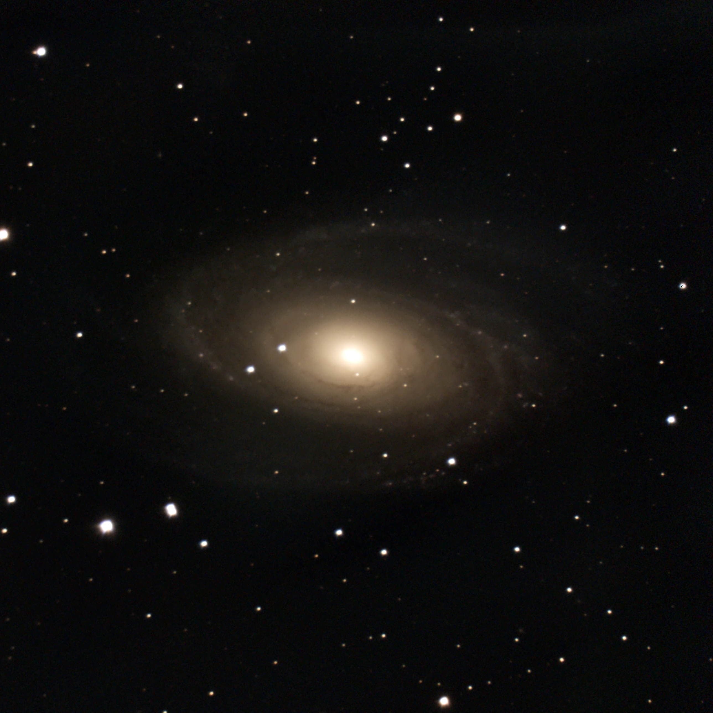
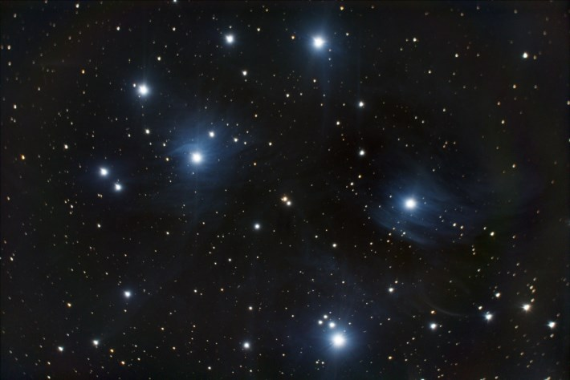

Amateur Astrophotography
I build and operate deep-sky imaging telescopes. The work typically requires quick setup, alignment, calibration, and troubleshooting in order to maximize imaging uptime.
Relevance
- Integrated multi-device software ecosystems
- Tuned tracking for long exposures
- Diagnosed alignment and calibration issues
Equipment
- Telescope day and night operations
- Multi-session imaging workflows
- Image stacking and post-processing






Click any image to view fullscreen. Eagle Nebula, Whirlpool Galaxy, Dumbbell Nebula, Bode's Galaxy, Total Solar Eclipse, Partial Solar Eclipse, Pleiades.